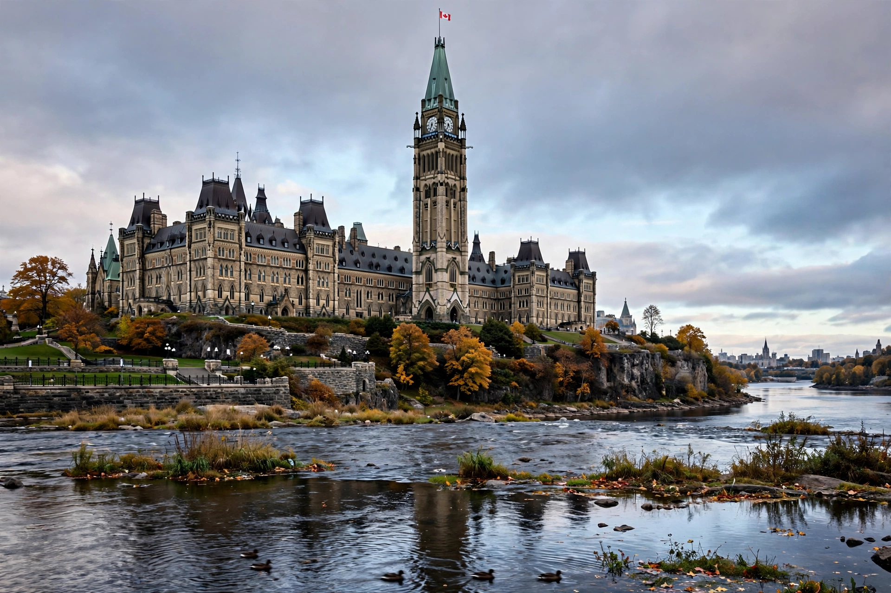

The Parliament of Canada (French: Parlement du Canada) is the federal legislature of Canada, seated at Parliament Hill in Ottawa. Under the Constitution Act, 1867, it consists of three parts: the monarch (represented by the governor general), the Senate (upper house), and the House of Commons (lower house).

Senators are appointed by the governor general on the prime minister's advice and serve to age 75; members of Parliament (MPs) are elected by first-past-the-post in single-member ridings. Legislation must pass both houses and receive royal assent. By convention the government is formed in and accountable to the Commons.
Parliament was established at Confederation in 1867, modelled on the Westminster system. The Centre Block, rebuilt after a 1916 fire, is a Gothic Revival landmark topped by the Peace Tower.
See also: Monarchy of Canada, Prime Minister of Canada